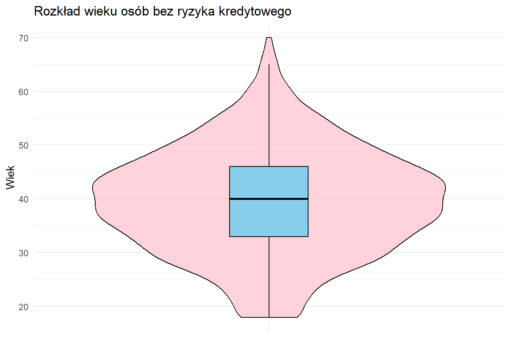
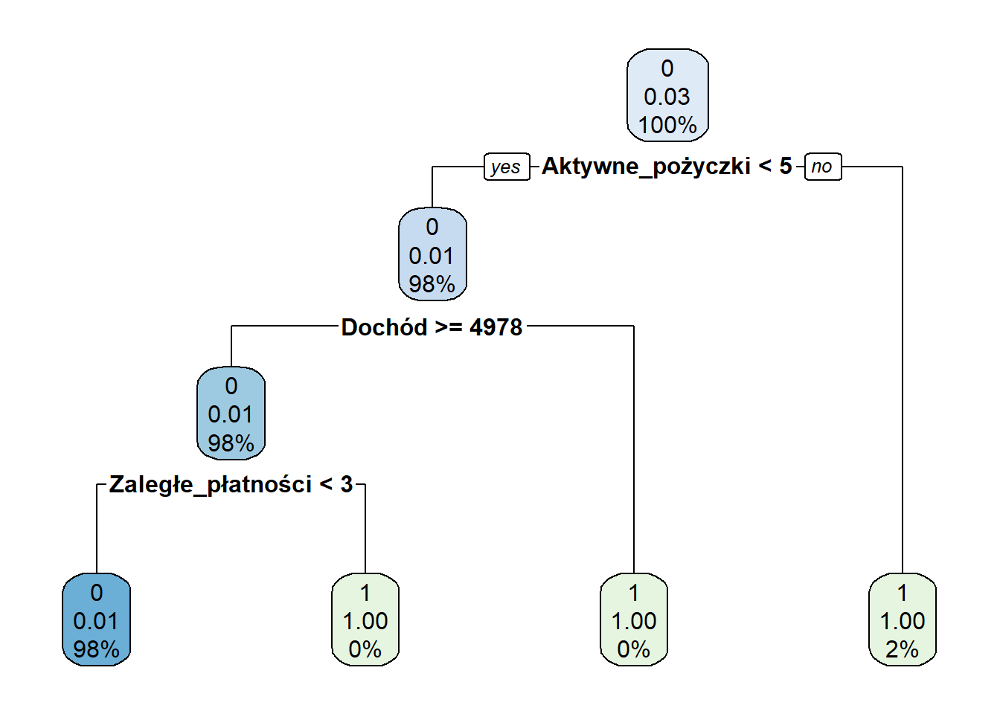

# Importowanie danych
dane_atlas <- import("data_atlas.csv")
# Zamiana pustych pól na NA
dane_atlas[dane_atlas == ""] <- NA
# Tworzenie nowej ramki danych z przekształconymi kolumnami
dane_atlas_clear <- data.frame(
Wiek = dane_atlas$age,
Dochód = as.numeric(gsub(" złoty", "", dane_atlas$income)),
Dzieci = as.integer(
gsub(" dzieci", "",
recode(dane_atlas$children, "brak" = "0 dzieci"))
),
Historia_kredytowa = dane_atlas$credit_history,
Zaległe_płatności = as.integer(
recode(dane_atlas$overdue_payments,
"opóźnienia" = "1",
"brak opóźnień" = "0",
"2" = "1",
"3" = "1")
),
Wartość_aktywów = as.numeric(
gsub(" złoty", "", dane_atlas$assets_value)
),
Posiada_własność = as.integer(
recode(dane_atlas$owns_property,
"tak" = "1",
"nie" = "0")
),
Aktywne_pożyczki = dane_atlas$active_loans,
Lata_w_pracy = dane_atlas$years_in_job,
Typ_zatrudnienia = dane_atlas$employment_type,
Inne_pożyczki = dane_atlas$other_loans,
Edukacja = dane_atlas$education,
Miasto = dane_atlas$city,
Stan_małżeński = dane_atlas$marital_status,
# Zaokrąglenie kolumny Wskaźnik_wsparcia do dwóch miejsc po przecinku
Wskaźnik_wsparcia = round(dane_atlas$support_indicator, 2),
Ryzyko_kredytowe = dane_atlas$credit_risk
)
# Aktualizacja kolumny 'Ryzyko_kredytowe' na podstawie warunków
dane_atlas_clear$Ryzyko_kredytowe <- ifelse(
apply(dane_atlas_clear, 1, function(w) any(is.na(w))) & dane_atlas_clear$Ryzyko_kredytowe == 0,
1,
dane_atlas_clear$Ryzyko_kredytowe
)KonkursATLAS
Czyszczenie ramki danych
dane_atlas_clear_no_na <- na.omit(dane_atlas_clear)Analiza
Wizaulizacja rozkładu wieku osób bez ryzyka kredytowego
filtered_data_atlas_clear <- subset(dane_atlas_clear, Ryzyko_kredytowe == 0)
ggplot(filtered_data_atlas_clear, aes(x = "", y = Wiek)) +
geom_violin(fill = "pink", alpha = 0.7, color = "black") + # Violin Plot
geom_boxplot(width = 0.2, fill = "skyblue", color = "black", outlier.shape = NA) +
labs(title = "Rozkład wieku osób bez ryzyka kredytowego", y = "Wiek", x = "") +
theme_minimal()
Z podanego wykresu możemy odczytać przewagę osób w wieku między 37 a 42 lat, co lekko rozbiega się z idealnym wiekiem do uzyskania kredytu. Zakładając, że kredytobiorcy chcieliby otrzymać kredyt hipoteczny na maksymalnie 30 lat, a wiek emerytalny u kobiet wynosi 60 lat, a u mężczyzn 65 lat, wiek ten powinien przypadać na okres między 30 a 35 rokiem życia. Przesuwając ten zakres do wieku z naszej wizualizacji, możemy szacować, że długość spłaty kredytu odpowiednio się skróci, co spowoduje wzrost kwoty raty, którą trzeba będzie zapłacić w określonym terminie.
Modele predykcyjne
Podział na zbiory treningowe i testowe
set.seed(42)
# Podział danych na treningowe i testowe (70%/30%)
train_indices <- sample(1:nrow(dane_atlas_clear_no_na), 0.7 * nrow(dane_atlas_clear_no_na))
train_data <- dane_atlas_clear_no_na[train_indices, ]
test_data <- dane_atlas_clear_no_na[-train_indices, ]Regresja logistyczna
# Regresja logistyczna
log_model <- glm(Ryzyko_kredytowe ~ ., data = train_data, family = binomial)
# Predykcja na zbiorze testowym
log_preds <- predict(log_model, newdata = test_data, type = "response")
log_preds_class <- ifelse(log_preds > 0.5, 1, 0)
# Ocena modelu
library(caret)
confusionMatrix(as.factor(log_preds_class), as.factor(test_data$Ryzyko_kredytowe))Confusion Matrix and Statistics
Reference
Prediction 0 1
0 955 22
1 0 9
Accuracy : 0.9777
95% CI : (0.9664, 0.986)
No Information Rate : 0.9686
P-Value [Acc > NIR] : 0.05492
Kappa : 0.4421
Mcnemar's Test P-Value : 7.562e-06
Sensitivity : 1.0000
Specificity : 0.2903
Pos Pred Value : 0.9775
Neg Pred Value : 1.0000
Prevalence : 0.9686
Detection Rate : 0.9686
Detection Prevalence : 0.9909
Balanced Accuracy : 0.6452
'Positive' Class : 0
Analiza wyników macierzy pomyłek:
Accuracy: 97.77%, co wskazuje na bardzo dobrą ogólną skuteczność modelu.
Sensitivity: 100%, model poprawnie identyfikuje wszystkie przypadki pozytywne.
Specificity: 29.03%, wskazuje na niską zdolność do poprawnej klasyfikacji przypadków negatywnych.
Kappa: 0.4421, co oznacza umiarkowaną zgodność między przewidywaniami modelu a rzeczywistością.
Prevalence: 96.86%, wskazuje na bardzo nierówny rozkład klas (więcej przypadków 0).
Model działa dobrze na wykrywaniu pozytywnych przypadków, ale jego zdolność do wykrywania przypadków negatywnych jest słaba.
Drzewo decyzyjne
library(rpart)
library(rpart.plot)
tree_model <- rpart(
Ryzyko_kredytowe ~ .,
data = train_data,
method = "class",
control = rpart.control(maxdepth = 10, minsplit = 2, minbucket = 1)
)
rpart.plot(tree_model)
Drzewo decyzyjne pokazuje, że na podstawie zmiennej “Aktywne_pozyczki” (czyli liczba aktywnych pożyczek) można wstępnie podjąć decyzję dotyczącą ryzyka kredytowego. Jeśli liczba aktywnych pożyczek jest mniejsza niż 5, dalsza analiza zależy od dochodu klienta (próg 4978). Dla klientów z dochodem poniżej tej wartości, ryzyko kredytowe jest niskie, a dla klientów z dochodem powyżej tego progu, istotną rolę odgrywa liczba zaległych płatności (poniżej 3 oznacza niższe ryzyko).
Las losowy
library(randomForest)
# Trening lasu losowego
rf_model <- randomForest(as.factor(Ryzyko_kredytowe) ~ ., data = train_data, ntree = 100, mtry = 3)
# Predykcja
rf_preds <- predict(rf_model, newdata = test_data)
# Ocena modelu
confusionMatrix(rf_preds, as.factor(test_data$Ryzyko_kredytowe))Confusion Matrix and Statistics
Reference
Prediction 0 1
0 955 11
1 0 20
Accuracy : 0.9888
95% CI : (0.9801, 0.9944)
No Information Rate : 0.9686
P-Value [Acc > NIR] : 2.68e-05
Kappa : 0.7789
Mcnemar's Test P-Value : 0.002569
Sensitivity : 1.0000
Specificity : 0.6452
Pos Pred Value : 0.9886
Neg Pred Value : 1.0000
Prevalence : 0.9686
Detection Rate : 0.9686
Detection Prevalence : 0.9797
Balanced Accuracy : 0.8226
'Positive' Class : 0
Na podstawie wyników macierzy pomyłek i statystyk modelu:
Dokładność (Accuracy) wynosi 98.88%, co wskazuje na bardzo dobry model, który poprawnie klasyfikuje przypadki.
Czułość (Sensitivity) wynosi 1, co oznacza, że model doskonale identyfikuje przypadki ryzyka kredytowego (klasa 0).
Specyficzność (Specificity) wynosi 0.6452, co oznacza, że model nie jest tak skuteczny w wykrywaniu przypadków bez ryzyka.